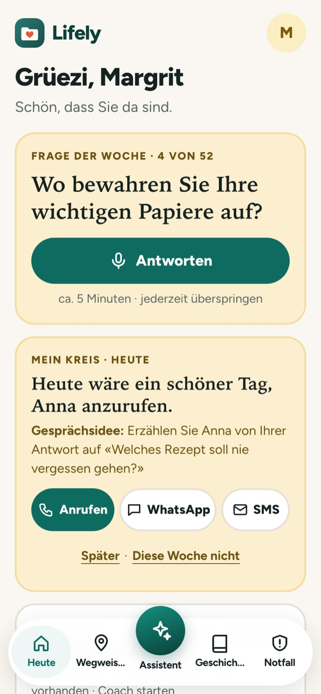
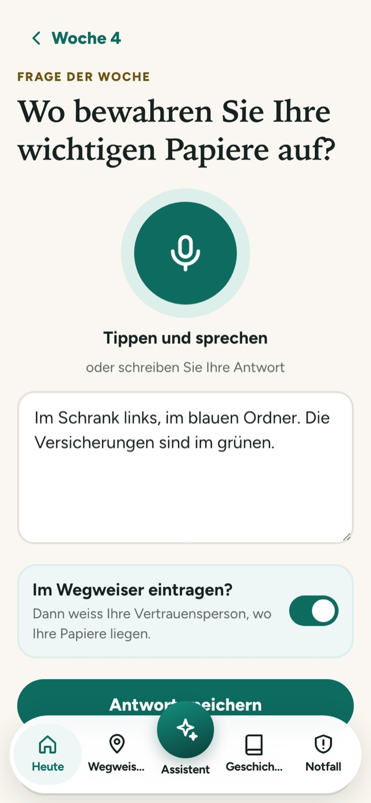
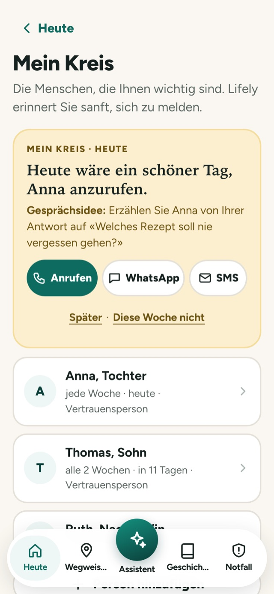
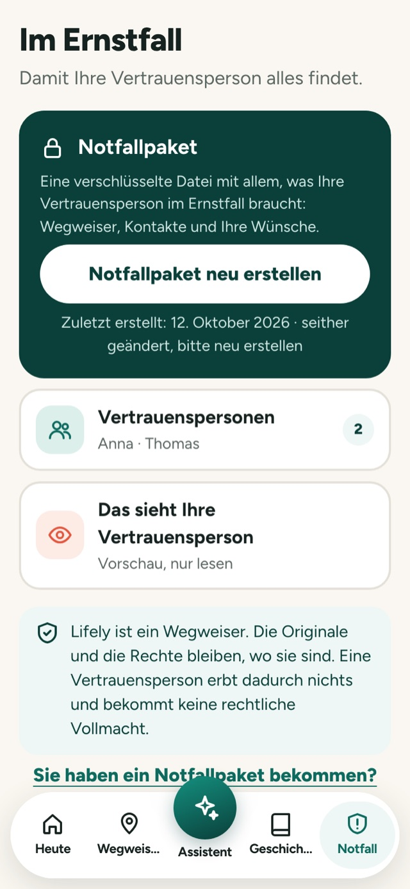
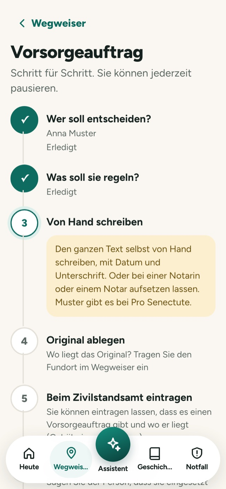
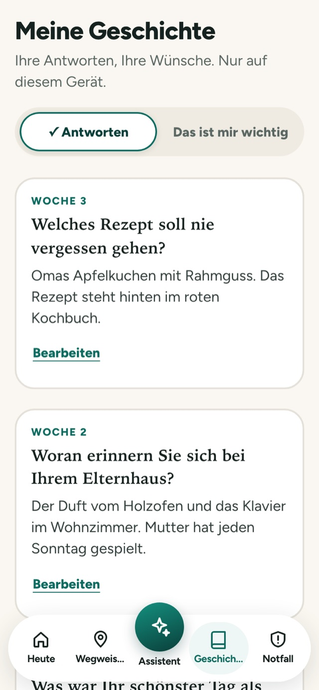
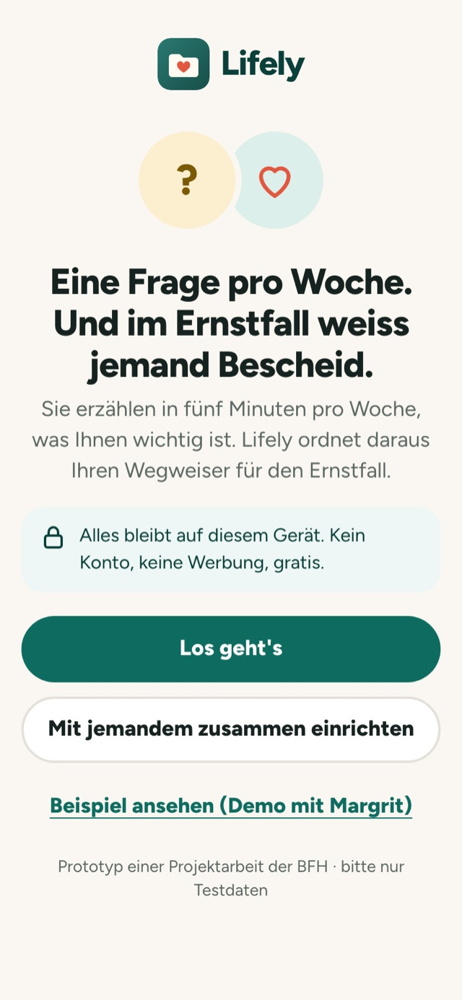
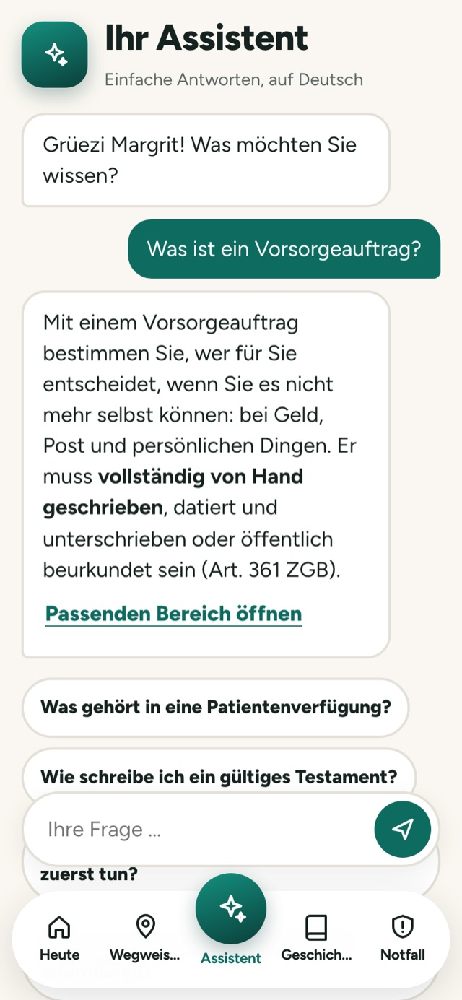
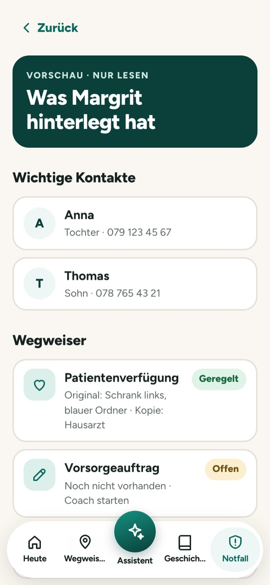

Zu zweit einrichten
Kinder richten Lifely mit den Eltern ein. Zehn Minuten, kein Konto.
Lifely stellt jede Woche eine einfache Frage. Sie antworten in fünf Minuten, sprechend oder schreibend. Daraus entstehen Ihr Erinnerungsbüchlein und ein Wegweiser, der zeigt, was geregelt ist und wo die Originale liegen.




Warum Lifely
Vorsorge scheitert selten am Wissen, sondern am Anfangen. Darum beginnt Lifely nicht mit einem Formular, sondern mit einer Frage. Woche für Woche entsteht Ihr Wegweiser, und im Ernstfall weiss jemand Bescheid.
Sie beantworten nur kurze Fragen. Alles geschieht auf Ihrem eigenen Gerät.
Kinder richten Lifely mit den Eltern ein. Zehn Minuten, kein Konto.
Sprechen oder schreiben, jederzeit überspringen.
Praktische Antworten tragen Fundorte ein, nach Rückfrage.
Ein Knopf: Lifely prüft, was fehlt, und erstellt ein verschlüsseltes Notfallpaket.
Etwa die Hälfte Erinnerungen und Alltag, die andere Hälfte Wünsche und Vorsorge. So bleibt es ein Ritual und fühlt sich nicht wie eine Pflicht an. Antworten Sie mit Ihrer Stimme oder mit der Tastatur.
Was ist geregelt, wo liegt das Original, wer weiss Bescheid? Verfügungen, Testament, Versicherungen, Konten, Verträge und Abos, jeweils mit klarem Status. Pro Bereich sind mehrere Einträge möglich.
Von «Wer soll entscheiden?» bis «jährlich prüfen». Der Coach erklärt, was gilt, und verweist auf Muster und das Zivilstandsamt. Lifely erstellt kein Rechtsdokument.


Aus den Antworten entsteht ein Büchlein zum Ausdrucken oder Verschenken. Und eine Gesprächskarte «Das ist mir wichtig» für Familie und Hausarzt.
Fast alle haben Menschen, nur der Kontakt ist oft zu selten. In «Mein Kreis» hinterlegen Sie bis zu fünf Menschen mit Ihrem Rhythmus. Lifely erinnert sanft und schlägt ein Gesprächsthema vor. Mit einem Tipp rufen Sie an oder schreiben eine Nachricht.
Geregelt, offen oder bitte prüfen: als Wort und als Farbe.
Beim Öffnen sehen Sie, wen Sie anrufen könnten. Sie bestimmen den Rhythmus, auf Wunsch auch im Kalender.
Drei Schriftstufen, grosse Knöpfe, klare Kontraste.
Das Notfallpaket öffnet nur, wer das Passwort von Ihnen bekommen hat.
Antworten Sie einfach mit Ihrer Stimme.



Wir entwickeln Lifely im Rahmen einer Projektarbeit an der Berner Fachhochschule BFH und suchen Menschen ab 65 und ihre Angehörigen, die den Prototyp ausprobieren.
Im Prototyp wird die Nachricht noch nicht übermittelt.
Ein Wegweiser für den Ernstfall, der als Wochenfrage beginnt. Sie erzählen in fünf Minuten pro Woche, was Ihnen wichtig ist, und Lifely zeigt, was geregelt ist und wo die Originale liegen.
Nur auf Ihrem Gerät. Lifely hat kein Konto, keine Cloud und keinen Server. Für den Ernstfall erstellen Sie mit einem Knopf ein verschlüsseltes Notfallpaket. Ihre Vertrauensperson öffnet es mit dem Passwort, das Sie ihr geben.
Nein. Lifely ist ein Wegweiser und ersetzt keine Beratung, kein Register und kein Notariat. Der Vorsorgeauftrag-Coach erklärt die Schritte, das Dokument schreiben Sie selbst von Hand.
Sie hinterlegen bis zu fünf Menschen aus Ihrem Umfeld mit einem Rhythmus. Lifely erinnert sanft, sich zu melden, und schlägt ein Gesprächsthema vor. Es gibt keine Gespräche mit Fremden.
Nein, Lifely ist ein Prototyp aus einer Projektarbeit an der BFH (Modul EBDS). Bitte nur mit Testdaten verwenden. Weitere Sprachen folgen.
Fünf Minuten, sprechend oder schreibend. Der Rest ergibt sich Woche für Woche.